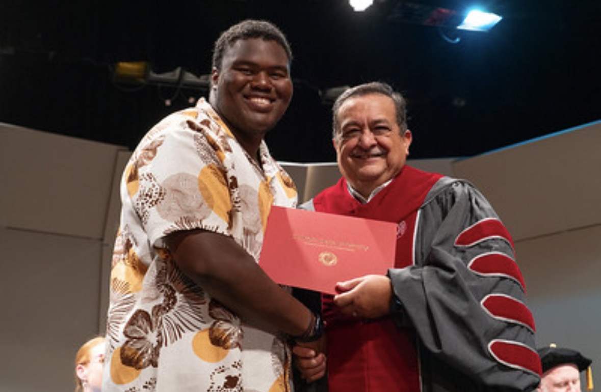

Resume Website
A multi-page personal portfolio built with semantic HTML and responsive CSS.
HTML • CSSCOMPUTER SCIENCE • GAME DEVELOPMENT
Computer Science Student | Football Player | Resident Assistant

WELCOME
I am a Computer Science student at Sul Ross State University interested in game development. My goal is to continue developing my technical and professional skills while gaining experience that will prepare me for a career in the game development field.
ACADEMICS
Computer Science
Alpine, Texas
Expected Graduation: 2028
EXPERIENCE
Sul Ross State University | 2026–Present
WHAT I BRING
MILESTONES
SELECTED WORK
A look at my coursework, interests, and the projects I want to keep building.
A multi-page personal portfolio built with semantic HTML and responsive CSS.
HTML • CSSExploring the skills and tools used to design interactive game experiences.
Design • IdeasPracticing page structure, navigation, links, images, and accessible content.
Web • LearningA space for a future programming or game project as my technical skills grow.
In ProgressNote: These cards describe current interests and planned work; replace them with finished projects as they become available.